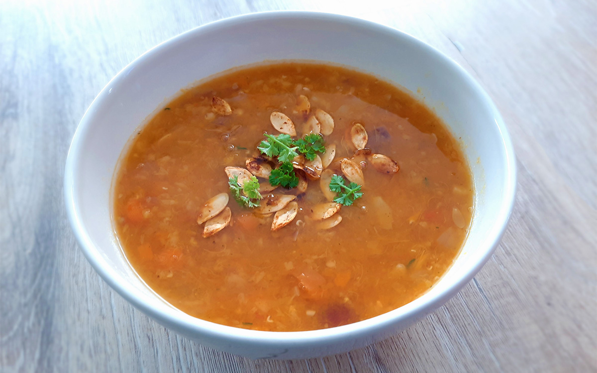

sri lankaanse pompoen curry

surinaamse roti

koreaanse bibimbap

italiaanse caponata

hutspot uit eigen land

avocado salade

amerikaanse caesar salade

chili sin carne met guacamole

chorizosoep

enchiladas

indonesische vegetarische balletjes

pompoensoep

Bereidingsduur: 45 minuten
Aantal personen: 4
Ingrediënten:
600 gram pompoen
1 teentje knoflook
2 rode uien
200 gram wortel
2 tomaten
4 handjes peterselie
2 blokjes groentebouillon
1 eetlepel tijm
2 eetlepels kerrie
1 eetlepel paprikapoeder
1 eetlepel komijn
naar smaak peper en zout
600 gram pompoen
1 teentje knoflook
2 rode uien
200 gram wortel
2 tomaten
4 handjes peterselie
2 blokjes groentebouillon
1 eetlepel tijm
2 eetlepels kerrie
1 eetlepel paprikapoeder
1 eetlepel komijn
naar smaak peper en zout
Instructies:
1. Snijd de uien, pompoenblokjes, tomaten en knoflook grof. Bewaar de pompoenpitten en spoel deze af.
2. Zet een soeppan op het vuur en fruit de ui en knoflook kort. Voeg de stukjes pompoen, wortel, 1 liter water, tomaten en bouillonblokjes toe aan de pan. Laat dit minstens 15 minuten koken op zacht vuur.
3. Ondertussen kruid je de pompoenpitten met paprikapoeder, komijn en naar smaak peper en zout. Rooster de pitten in een andere pan en snijd de peterselie fijn.
4. Pureer de soep met een staafmixer en voeg naar smaak kerrie, tijm, peper en zout toe. Laat de soep koken tot de gewenste dikte.
5. Schep de soep op en garneer met de peterselie en de pompoenpitten.
1. Snijd de uien, pompoenblokjes, tomaten en knoflook grof. Bewaar de pompoenpitten en spoel deze af.
2. Zet een soeppan op het vuur en fruit de ui en knoflook kort. Voeg de stukjes pompoen, wortel, 1 liter water, tomaten en bouillonblokjes toe aan de pan. Laat dit minstens 15 minuten koken op zacht vuur.
3. Ondertussen kruid je de pompoenpitten met paprikapoeder, komijn en naar smaak peper en zout. Rooster de pitten in een andere pan en snijd de peterselie fijn.
4. Pureer de soep met een staafmixer en voeg naar smaak kerrie, tijm, peper en zout toe. Laat de soep koken tot de gewenste dikte.
5. Schep de soep op en garneer met de peterselie en de pompoenpitten.